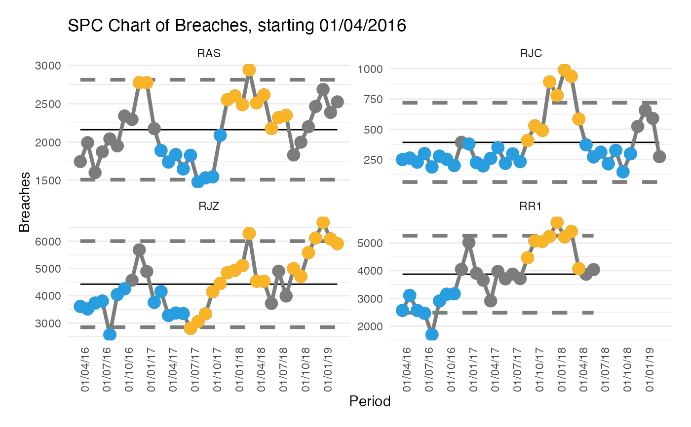

spcOptions.Rd`spcOptions` returns a list object containing properties which adjust the output of the 'spc' function.
spcOptions( rebase = NULL, fixAfterNPoints = NULL, improvementDirection = NULL, outputChart = NULL, pointSize = NULL, percentageYAxis = NULL, target = NULL, trajectory = NULL, mainTitle = NULL, xAxisLabel = NULL, yAxisLabel = NULL, fixedXAxisMultiple = NULL, fixedYAxisMultiple = NULL, xAxisDateFormat = NULL, xAxisBreaks = NULL, yAxisBreaks = NULL, plotThemeOverride = NULL )
| rebase | Specify a field name which contains a control limit rebasing flag. This field should contain integer values 0 and 1, and any date value where the rebase field is 1 will trigger a recalculation of the control limits. Field name can be specified using non-standard evaluation (i.e. no quotation marks). |
|---|---|
| fixAfterNPoints | Specify a number points after which to fix SPC calculations. |
| improvementDirection | Specify whether an increase or decrease in measured variable signifies process improvement. Accepted values are 1 or 'increase' for increase as improvement or -1 or 'decrease' for decrease as improvement. |
| outputChart | Specify whether the function should output a ggplot object or a data table of SPC values. Accepted values are TRUE for a chart output, or FALSE for a data table output. |
| pointSize | Specify the plotting point size for the ggplot output. Default is 2.5. |
| percentageYAxis | Specify whether the y axis values are percentages. Percentages in the data frame should be decimal values. Accepted values are TRUE for percentage y axis, FALSE for integer y axis. |
| target | Specify a field name which contains a target value. Field name can be specified using non-standard evaluation (i.e. no quotation marks). |
| trajectory | Specify a field name which contains a trajectory value. Field name can be specified using non-standard evaluation (i.e. no quotation marks). |
| mainTitle | Specify a character string value for the ggplot title. |
| xAxisLabel | Specify a character string value for the x axis title. |
| yAxisLabel | Specify a character string value for the y axis title. |
| fixedXAxisMultiple | Specify whether, if producing a faceted spc, x axis should be fixed for all facet plots. Accepted values are TRUE for fixed x axes or FALSE for individual x axes. |
| fixedYAxisMultiple | Specify whether, if producing a faceted spc, y axis should be fixed for all facet plots. Accepted values are TRUE for fixed y axes or FALSE for individual y axes. |
| xAxisDateFormat | Specify how dates on the x axis should be displayed. Format should be provided as a character string using 'd m Y' etc syntax. |
| xAxisBreaks | Specify an interval value for breaks on the x axis. Value should be a character string expressing interval length and type, e.g. "3 months", "7 days". |
| yAxisBreaks | Specify an interval value for breaks on the y axis. Value should be a numeric vector of length 1, either an integer for integer scales or a decimal value for percentage scales. This option is ignored if faceting is in use. |
| plotThemeOverride | Specify a list containing ggplot theme elements which can be used to override the default appearance of the plot. |
This function is designed to allow greater control over SPC charts created using this package. spcOptions is a list with named slots for known parameters within the spc function. It should be supplied to the options argument within the spc function, with the options listed within spcOptions. See examples below.
library(NHSRdatasets) data("ae_attendances") # Pick a few trust, and plot individually using facet # Also set the xaxis scale to vary for each and date groups to 3 months, using spcOptions orgs <- ae_attendances$org_code %in% c("RAS", "RJZ", "RR1", "RJC", "RQ1") trusts4 <- subset(ae_attendances, orgs & type == 1) # spcOptions should be supplied the the options argument within the spc function. spc(trusts4, valueField = "breaches", dateField = "period", facetField = "org_code", options = spcOptions( improvementDirection = "decrease", fixedYAxisMultiple = FALSE, xAxisBreaks = "3 months" ) )#> Warning: Removed 135 row(s) containing missing values (geom_path).#> Warning: Removed 135 row(s) containing missing values (geom_path).#> Warning: Removed 79 rows containing missing values (geom_point).#> Warning: Removed 90 rows containing missing values (geom_point).